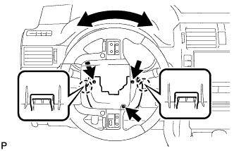
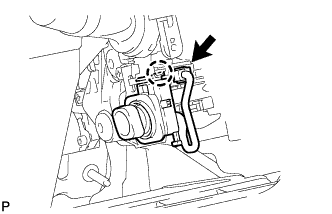

TILT AND TELESCOPIC MANUAL SWITCH > REMOVAL |
| 1. ALIGN FRONT WHEELS FACING STRAIGHT AHEAD |
| 2. DISCONNECT CABLE FROM NEGATIVE BATTERY TERMINAL |
Disable the auto tilt away function by changing the customize parameter (Click here).
Turn the engine switch on (IG). Operate the tilt and telescopic switch to fully extend and lower the steering column assembly.
Turn the engine switch off and disconnect the cable from the negative (-) battery terminal.
| 3. REMOVE STEERING COLUMN LOWER COVER |
|  |
Remove the 3 screws.
Detach the 2 claws and remove the steering column lower cover.
| 4. REMOVE TILT AND TELESCOPIC SWITCH |
|  |
Disconnect the connector.
Detach the claw and pull out the tilt and telescopic switch.